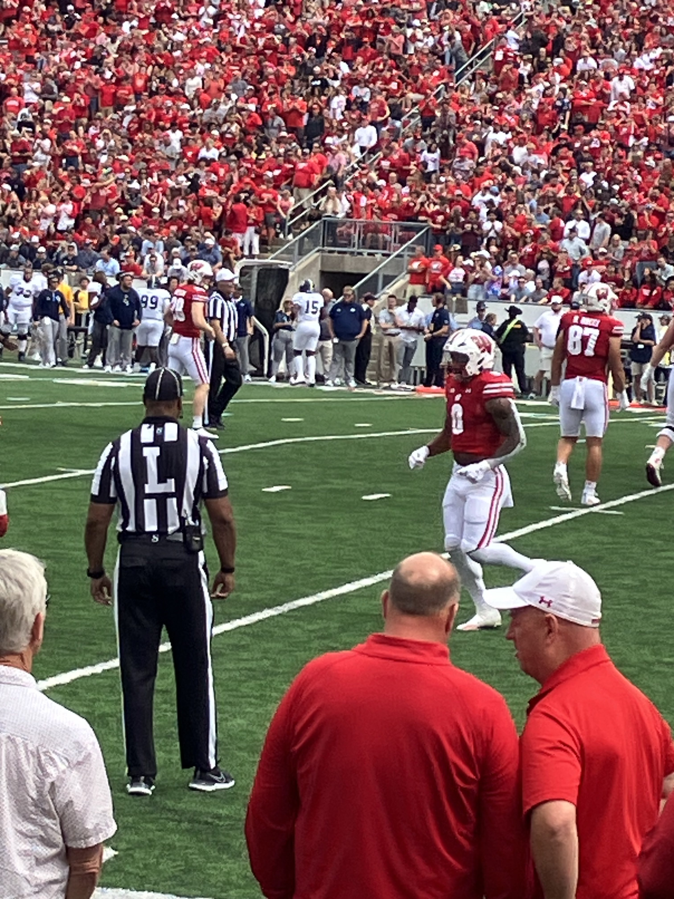
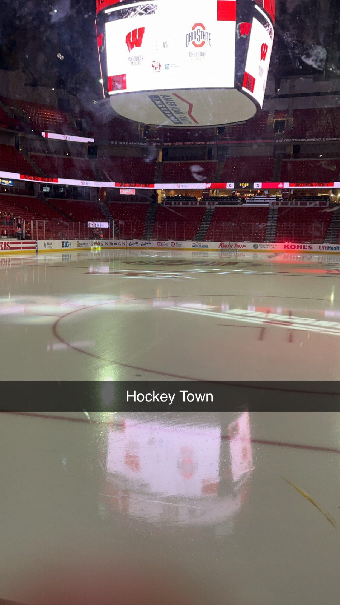

Top 3 Favorite Sports Teams
- Chicago Cubs (baseball)
Lovable Losers, Friendly Confines, That's Cub. I am a massive Cubs fan as I grew up 2 hours from Chicago. This team has given me the largest moments, and have broken my heart many times. I am proud to be a Cubs fan. It may not be easy, but nothing is. I have been a fan ever since I was about 3 years old. In my younger years, the team was pretty good! No playoff success, but we at least got there.
However, from 2009-2014 the Cubs were the worst team in baseball both in record and in talent. In 2015, my favorite player Kris Bryant started playing and led us to the playoffs for the first time in 7 years. We lost in the NLCS, but in 2016 the magic happened. A World Series came to the North Side of Chicago for the first time in 108 years. We had success for the next 4.5 years but then we had to rebuild yet again.
Now, in 2024, the Cubs are officially back to being a great team!!
- Bryan Danielson (Pro Wrestling)
So this may not be a "team" but Bryan has been an individual who has made me feel my entire life. He is constantly an underdog due to his size and stature in a largely massive industry, but he never gave up. He has given me my quote that I live by. "Fight for your dreams, and your dreams will fight for you".
Bryan unfortunately had to retire in 2015 due to Post Concussion Syndrome (along with seizures), and I stopped watching wrestling. However, he was finally cleared by doctors in 2018 and I came back to watch him. This is a person I look up to because he never gave up on his career or himself.
This year, in August, he will be retiring from full-time wrestling. However, he will still make appearances here and there. From wrestling in front of 15 people to 80K people and having a career any wrestler would want to have.
- Wisconsin Badgers (NCAA Athletics)
The Badgers are my favorite college sports team because partly I went here. However, the community that the sports games has is amazing and I am so glad I was part of it for 4 years. I was not a fan of Wisconsin growing up, as I am from Illinois. Even first starting college, I was still very loyal to the Michigan Wolverines.
As time went on, I started watching more Badger games and I got attached to them. Braelon Allen is my favorite football player (pictured below), while my favorite sport on campus is hockey, especially being able to go to the Kohl Center to watch the men play via free student tickets won in the Annual Student Shootout.
OnWisconsin!
A couple pictures from games I have attended at UW-Madison
 